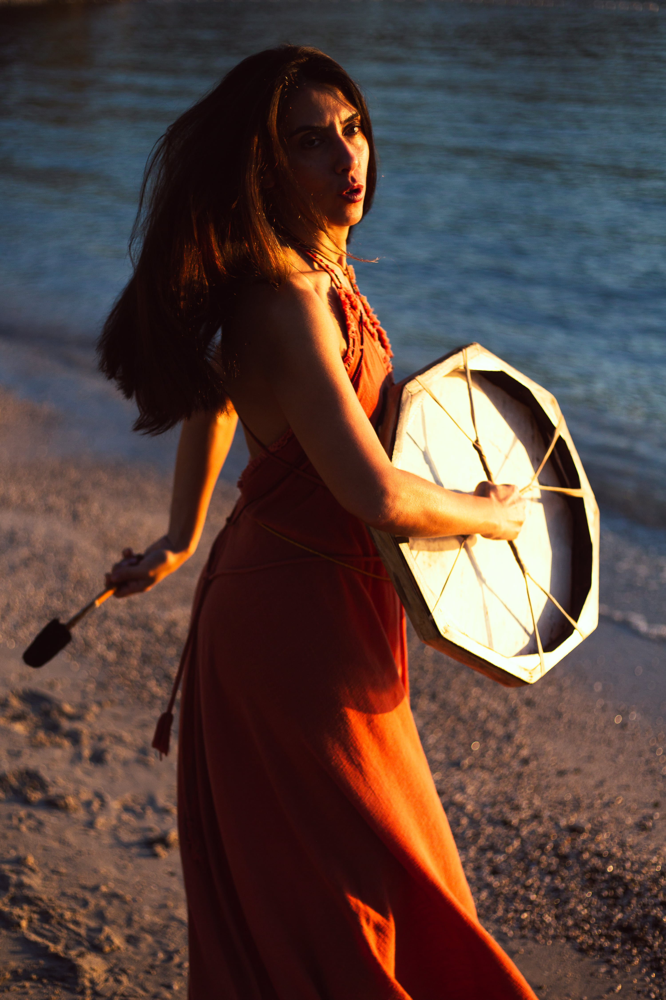

Ne zamandır “bir gün” diyorsun?

“Bir gün” dediğin şey hayatında yok değil.
Defterlerinde izleri var. Telefonunda ses kayıtları var. Bir dosya açtın, birkaç sayfa yazdın. Bir eğitim aldın. Sonra bir tane daha. Arkadaşlarına anlattın.
Hazırlığı var. Niyeti var. Malzemesi var. Ama kendisi yok.
Hâlâ içerideki kadar gerçek değil.
Artık onunla bir şey yap.
Evdeki Ses, içinde uzun zamandır taşıdığı bir şeyi hayata geçirmek isteyen kadınlar için altı haftalık canlı bir grup programı.
Yapmak istediğin bir şeyi seçiyor, onunla çalışıyor ve program bitmeden ona biçim verip dünyayla buluşturuyorsun.

Belki başladın.
Sonra başka bir fikir geldi. Adını değiştirdin.
Biraz daha araştırdın.. Tam ilerlerken başka sesler araya girdi:
Bu iyi mi?
...bunu kim ister?
...böyle mi yapmalıyım?
...yoksa başka türlü mü?
Ve yapmak istediğin şeyle
arandaki mesafe yeniden açıldı.
Bu kez yalnızca sonuca değil, olurken ne
olduğuna da kulak veriyoruz.
Seni tekrar tekrar çağıran şeyden başlarsın.
Belki üç yıldır dönüp durduğun tek bir cümleden.
İki yön arasında kaldığında yalnızca hangisinin
daha mantıklı olduğuna bakmazsın. Birini
anlatırken savunmaya geçtiğini, ötekini
anlatırken yeni cümlelerin gelmeye devam
ettiğini duyarsın.
Sürekli başa döndüğün yeri fark edersin. Bir şeyi daha
ortaya çıkmadan düzeltmeye başladığın anı da.
Bazı sorularla başlarız.
Asıl sorular yaptığın şeyin içinde belirir.
Verdiğin cevap da işi değiştirir.
Altı hafta boyunca çalıştığın şey
biçim kazanır.
Bir metin. Bir teklif. Bir atölye. Bir eser. Bir işin ilk çalışan hâli.
Ya da işinin kendi istediğin başka bir biçim.
Ve yaptığın şey senden çıkar.
Program bitmeden başka biri onunla karşılaşır.
Belki beklediğin yere cevap vermez.
Belki senin küçük gördüğün bir şeyi hemen fark eder.
Belki ilk karşılık sende her şeyi değiştirme isteği uyandırır.
Karşılığı duyarsın, ama direksiyonu ona vermezsin.
Dışarıdan gelenle sende olanı karıştırmadan yeniden seçersin.
Uzun zamandır “bir gün” dediğin şeyin dünyada bir karşılığı olacak.
Ve içinden dünyaya giden yolu bir kez baştan sona yürümüş olacaksın.
Bir şey dünyaya gelmeden önce nerede başlar?
Söyleyeceğin şeyi henüz bilmezsin, ama göğsünde bir şey kıpırdamıştır bile.
Ses üzerine çalışan bazı eski gelenekler, sesi kulağın işittiği yerde başlatmaz. Sufi müzisyen Hazrat Inayat Khan, sesin sırrının onun geldiği yerde saklı olduğunu söyler.
Evdeki Ses de oradan başlar.
O kıpırtının dünyaya çıkana kadar geçtiği bir yol var. Herkes onu bir yerinden tanır:
Bir cümle boğazına kadar gelir, geri döner.
Günlerce seni çağıran fikrin başına tam oturduğunda başka sesler konuşmaya başlar.
Yazdığını yüksek sesle okursun ve kâğıtta göremediğin şeyi duyarsın.
Aynı cümleyi iki insan söyler. Kelimeler aynıdır. Birininki geçip gider, ötekininki sende kalır.
Aynı kıpırtı yol boyunca söze, işe, teklife dönüşür; biçimi değişir. Ama gücü, doğduğu yerle bağını ne kadar koruduğundan gelir.
Bir şeyin tesiri, yalnızca ne söylediğinde değil, nereden söylediğinde saklıdır.
Altı hafta boyunca bu yolun tamamıyla çalışıyoruz: göğsündeki ilk kıpırtıdan dünyada birine değen işe kadar.


Programın içinde neler var?
Altı hafta boyunca yaptığın şeyle temasının kopmaması için
kurulmuş bir çalışma düzeni var.
Haftalık canlı buluşmalar
Haftada bir kez 2 saat birlikteyiz.
Haftanın malzemesini buraya getiriyor; sesle, sözle ve yaptığın şeyin kendisiyle çalışıyoruz. Bazı şeyler ancak başka insanların varlığında denendiğinde duyulur.
Proje Tezgâhı
İşin biçim kazanmaya başladığında canlı buluşmaların bir bölümü tezgâha dönüşüyor.
Kameralar açık, mikrofonlar kapalı, herkes kendi işinin başında.
Tek başına ertelediğin işi, başkalarının da çalıştığı bir odada yapıyorsun.

Günlük Akort
Her gün 8–10 dakikalık rehberli bir ses kaydı. Günün akışı başlamadan ya da işinin başına geçmeden önce, içeride hareket edeni yeniden duyabileceğin küçük bir temas alanı.
Rehberli pratikler
Ses, nefes, beden, hareket ve imgeyle çalışan yaklaşık 15 dakikalık rehberli pratikler. Haftanın çalışmasına göre video ya da ses kaydı olarak uygulayabileceğin bu pratikler, meseleyi kendi deneyimin içinde araştırabileceğin bir alan açıyor.
Haftanın dersi
Her hafta, o haftanın çalışmasını açan kayıtlı bir video ders var. Neye kulak vereceğimizi, neyi araştıracağımızı ve bunun üzerinde çalıştığın şeyle nasıl bir ilişkisi olduğunu burada kuruyoruz.

Workbook ve
Yaratıcı Ses Haritası
Her haftanın sorularını, uygulamalarını, fark ettiklerini ve verdiğin kararları taşıyan çalışma materyalleri.
Süreç boyunca burada biriken izler, altı haftanın sonunda Yaratıcı Ses Haritana dönüşüyor. Kendi yaratım sürecine dönüp bakabileceğin; nerede açıldığını, nerede dağıldığını, hangi eşiklerde durduğunu ve yeniden nasıl hareket ettiğini görebileceğin kişisel bir kayıt.
Kendi malzemenle çalışma
Program boyunca seçtiğin şeyin başına tekrar tekrar dönüyorsun. Haftanın dersinde, pratiğinde ve araştırmalarında açılanları kendi malzemen üzerinde deniyor; altı hafta boyunca onun nasıl değiştiğini ve biçim kazandığını görüyorsun.
Bunun için haftada en az 45 dakika ayırmanı öneriyoruz. Tek bir çalışma oturumu olabilir ya da haftanın içine bölünebilir. Daha fazla zaman ayırmak istersen bu alan açık.
Partner çalışması
Her hafta eşleştiğin partnerinle yaklaşık 20–25 dakika buluşuyorsun. Yaptığın şeyi onunla paylaşıyor ve onda ne kaldığını duyuyorsun.
Evdeki Ses asistanı
Canlı buluşmaların arasında kullanabileceğin, programın çalışma biçimiyle kurulmuş kişisel bir yapay zekâ alanı. Haftanın çalışmasına geri dönmek, kendi malzemene yeniden bakmak ve kaldığın yerden işe girmek için kullanıyorsun.
Oyun Alanı
Her hafta isteğe bağlı birkaç davet. Sesle, sözle, hareketle, nesnelerle ya da küçük ritüellerle kendi malzemene başka bir yerden yaklaşabileceğin daha serbest bir alan.
Haftanın araştırmaları
Hafta boyunca yanında taşıyacağın küçük yazılı araştırmalar. Gördüğünü, duyduğunu ve denediğini üzerinde çalıştığın şeye taşıyorsun.

Programın ritmi
Her gün 8–10 dakikalık Günlük Akort. Haftada bir kez 2 saatlik canlı buluşma. Hafta içinde kendi zamanına yerleştireceğin video ders, rehberli pratik, küçük araştırmalar, workbook ve partner buluşması.
Bir de üzerinde çalıştığın şeyin başına döndüğün zaman var. Bunun için haftada en az 45 dakika ayırmanı öneriyoruz. Daha fazlası, yaptığın şeyin doğasına ve kendi hayatındaki alana bağlı.
Oyun Alanı isteğe bağlı ve bu ritmin dışında.
Bu program sana uygun mu?
Evdeki Ses'e ne yapmak istediğini bilerek de gelebilirsin, yalnızca içinde bir şeyin biriktiğini bilerek de.
Altı hafta boyunca kendi malzemenin başına tekrar tekrar dönüyorsun. Sesinle ve bedeninle çalışıyorsun; burada önemli olan iyi söylemek değil, duymak. Yaptığın şeyi partnerinle paylaşıyor ve program bitmeden dünyayla buluşturuyorsun.
Bunun için meraktan biraz daha fazlası gerekiyor: zaman ayırmaya, denemeye, seçim yapmaya ve başladığın şeyin yanında kalmaya istekli olman.
Buraya bir şeyi yanında taşımaya devam etmek için değil, onunla bir şey yapmak için geliyorsun.
Ben Nilüfer Ormanlı.
Hayatımın büyük bölümünü bir şeylerin nasıl doğduğunu, biçim kazandığını ve dünyaya çıktığını yaşayarak geçirdim.
Beş yaşında aynanın karşısında doğaçlama yapmaya başladım. Doksanların sonlarında avangard müzik ve performansın içine girdim; sonra besteci, müzisyen ve ses sanatçısı olarak farklı alanlarda ürettim.
Beden ve hareket de uzun yıllardır pratiğimin bir parçası. Yoga, dans ve somatik çalışmaların yanı sıra mit, ritüel, derin dinleme ve farklı ses gelenekleri üzerine çalıştım.
2015’te Ses Kaşifleri’ni kurdum. O zamandan beri ses ve doğaçlama üzerine çalışmalar yürütüyor, Ses ile Şifa Uygulayıcılık Eğitimleri veriyorum.
Evdeki Ses, otuz yıla yaklaşan bütün bu pratiğin içinden çıktı.
Pratik Bilgiler
Canlı buluşma tarihleri
4 Kasım · 11 Kasım · 18 Kasım · 25 Kasım · 2 Aralık · 9 Aralık
Canlı buluşmalar kaydedilmiyor. Programın önemli bir parçası oldukları için mümkün olduğunca tüm buluşmalara katılmanı bekliyoruz.
Program sona erdikten sonra kayıtlı derslere ve program materyallerine 30 gün daha erişebilirsin.
Kayıtlar 3 Kasım 2026, 23.59’da kapanıyor.
Kontenjan daha önce dolarsa kayıtlar daha erken kapanır.